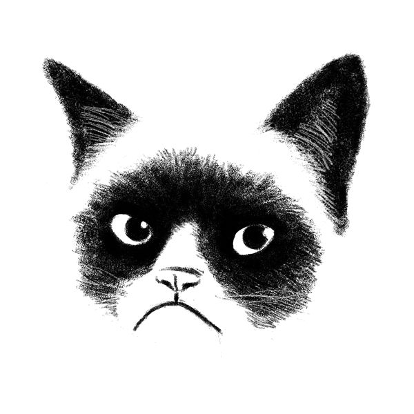

About
Let me introduce myself...My name is Dasha. I was born and raised in Belarus, which is famous for being one of the least visited countries on the continent of Eurosia. I studied Cultural Studies at Belarusian State University. But after realising that this path is taking me nowhere, I jumped to the opportunity of pursuing education and life in the US. I moved to New York City in 2010, and have been living, struggling, hoping and dreaming here ever since. It took me a while to finally realise which direction I should follow. I tried sales, healthcare, and social services. My work experience helped me evolve patience, stress management, and communication skills, but most importantly, it pointed me closer to a passion I wish to develop to a proffesional standing - my curiosity about the ever-evolving computer technologies. I am a self-driven, motivated person and I am always looking for new challenges to overcome and problems to solve.
Spirit Animal
My spirit animal is a well-known and most-loved grumpy cat. Because there should always be a grumpy person in a crowd to dilute the overflowwing positive thinking. And because that's the only animal that comes to mind after working with css the whole day and realising that your designer skills are far off from being exellent.